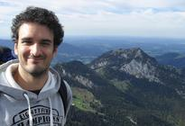
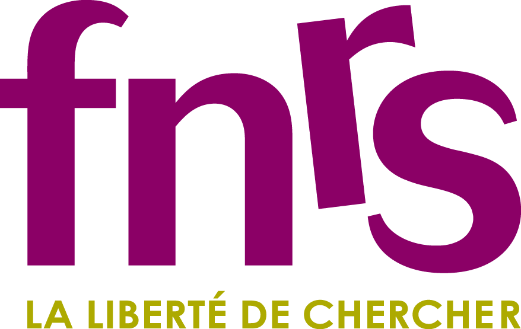
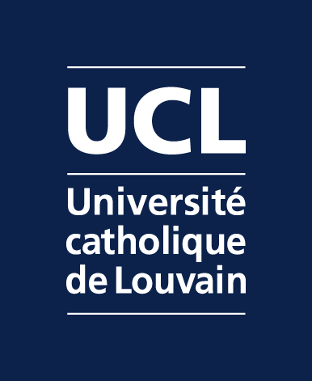
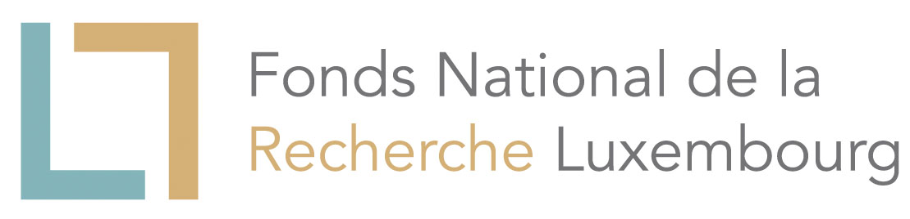
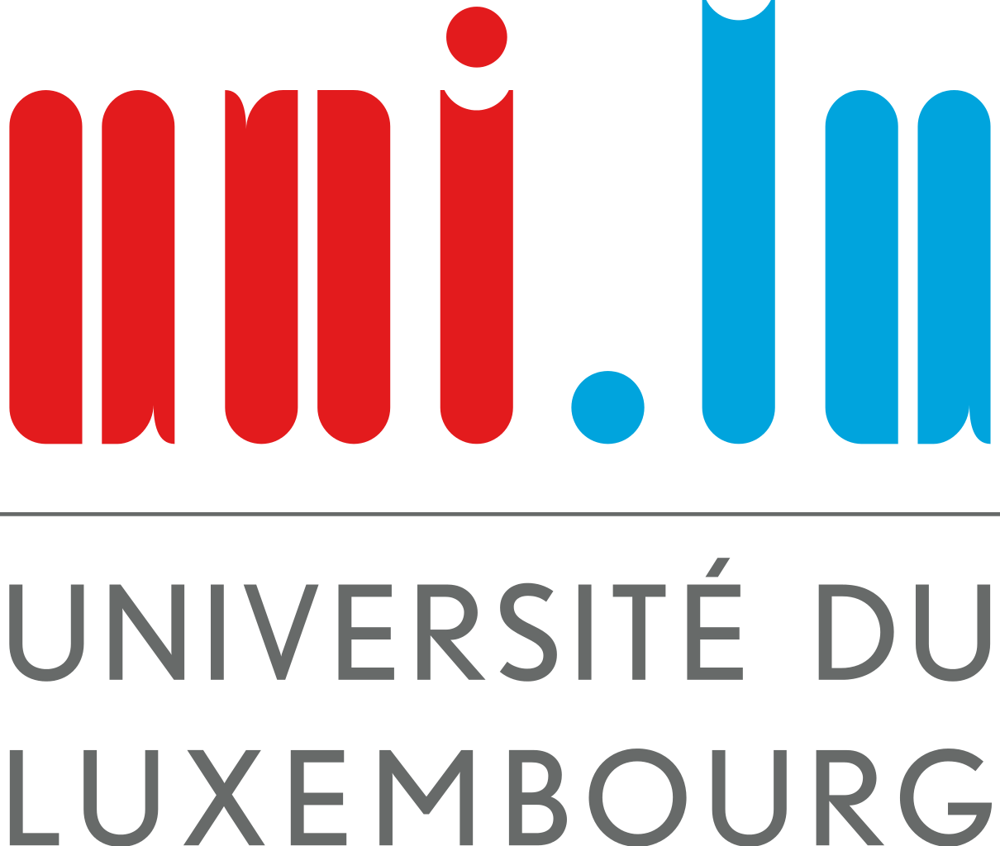

About Me

Welcome!
My name is Henrique Pereira Coutada Miranda. Currently I am a software developer at VASP Software GmbH in Vienna.
Here you will find small scripts, games and programs that I implemented and want to share with everyone.
Some of these projects are still under development.
Short Bio
2019-present: Software developer at VASP Software GmbH
2017-2019: Post-doc position in the Université catholique de Louvain in the groups of Prof. Gian-Marco Rignanese and Prof. Geoffroy Hautier
2013-2017: PhD on "Ab initio approaches to Resonant Raman Spectroscopy of Transition Metal Dichalcogenides" under the supervision of Prof. Ludger Wirtz in the Theoretical Solid-State Physics Group in the University of Luxembourg.
2012-2013: Master thesis on “Embedding schemes for treating magnetic impurities and defects in metallic systems” under the supervision of Prof. Matthieu Verstraete in the University of Liège and Prof. Myrta Gruning at the time in the University of Coimbra now at the University of Belfast.
2011-2013: Master in Physics (specialization in Computational Physics) in the Physics Department of the Faculty of Sciences and Technology of the University of Coimbra.
2008-2011: Degree in Physics in the Physics Department of the Faculty of Sciences and Technology of the University of Coimbra.
Phonon and exciton visualization
Excitons: http://henriquemiranda.github.io/excitonwebsite/
Phonons: http://henriquemiranda.github.io/phononwebsite/
Publications
- D. Sangalli, A. Ferretti, H. Miranda, C. Attaccalite, I. Marri, E. Cannuccia, P. Melo, M. Marsili, F. Paleari, A. Marrazzo, G. Prandini, P. Bonfà, M.O. Atambo, F. Affinito, M. Palummo, A. Molina-Sánchez, C. Hogan, M. Grüning, D. Varsano, and A. Marini, J. Phys.: Condens. Matter 31, 325902 (2019).
- F. Paleari, H.P.C. Miranda, A. Molina-Sánchez, and L. Wirtz, Phys. Rev. Lett. 122, 187401 (2019)
- E. Torun, H.P.C. Miranda, A. Molina-Sánchez, and L. Wirtz, Phys. Rev. B 97, 245427 (2018)
- G. Petretto, S. Dwaraknath, H.P.C. Miranda, D. Winston, M. Giantomassi, M.J. van Setten, X. Gonze, K.A. Persson, G. Hautier, and G.-M. Rignanese, Scientific Data 5, 180065 (2018)
- E.V.C. Robert, R. Gunder, J. de Wild, C. Spindler, F. Babbe, H. Elanzeery, B. El Adib, R. Treharne, H.P.C. Miranda, L. Wirtz, S. Schorr, and P.J. Dale, Acta Materialia 151, 125 (2018)
- H.P.C. Miranda, S. Reichardt, G. Froehlicher, A. Molina-Sánchez, S. Berciaud, and L. Wirtz, Nano Lett. 4, 17 (2017)
- T. Galvani, F. Paleari, H.P.C. Miranda, A. Molina-Sánchez, L. Wirtz, S. Latil, H. Amara, and F. Ducastelle, Phys. Rev. B 94, 125303 (2016)
- J. Li, H. P. C. Miranda, Y.-M. Niquet, L. Genovese, I. Duchemin, L. Wirtz, and C. Delerue, Phys. Rev. B 92, 075414 (2015)
- M. Endlich, H. P. C. Miranda, A. Molina-Sánchez, L. Wirtz, and J. Kröger, Annalen der Physik 526, 372 (2014)
Projects
Developer of yambopy
Developer of phononwebsite
Developer of excitonwebsite
Colaborator of yambo
Contact
If you have any suggestions or questions send an e-mail to:
miranda dot henrique at gmail
Funding
Fonds National de la Recherche Scientifique (2017-2019): http://www.fnrs.be/

Université Catholique de Louvain (2017-present): https://uclouvain.be

Fonds National de la Recherche Luxembourg (2013-2017): http://www.fnr.lu/

University of Luxembourg (2013-2017): http://wwwen.uni.lu/
